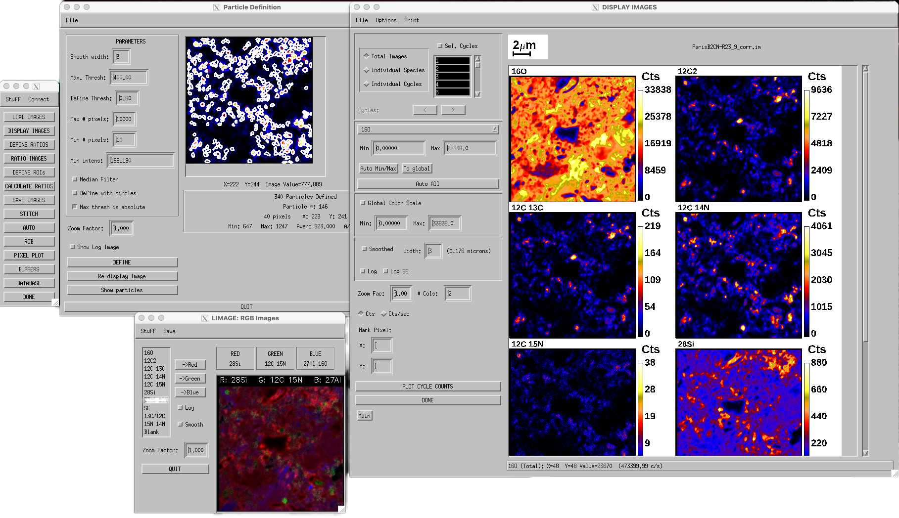

L'image: Larry's Image Program
L'image is a full-featured, highly flexible system for interactive viewing and quantitative processing of Cameca ion images (e.g., produced by the NanoSIMS and ims-1280 ion microprobes). It is built on the IDL programming language* and provides the ability to quickly investigate and process image data and produce high-quality output for presentation or publication. It runs on both PC and Mac versions of IDL, including free IDL Virutal Machine technology.
L'image is developed by Larry Nittler and marketed by the Carnegie Institution of Washington.
For more information please contact Larry Nittler at lnittler at asu.edu
*A PV-WAVE version is available , but is no longer being actively developed.
